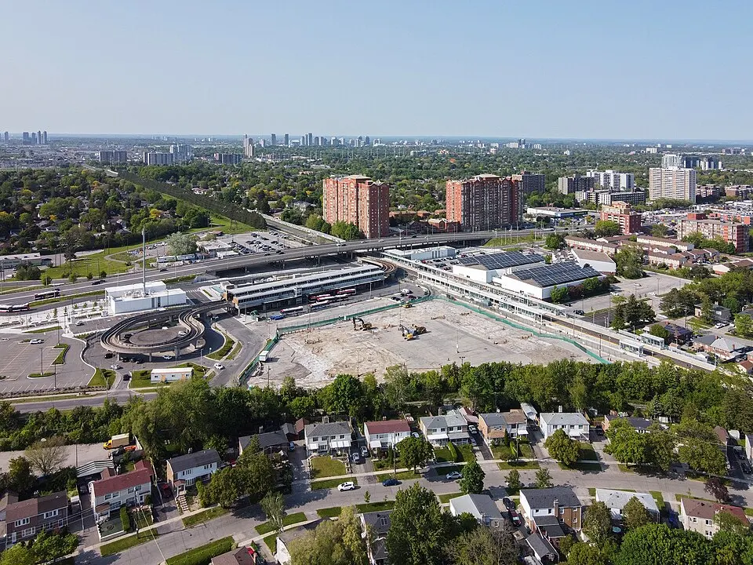

Signal
SignalStation atlas / Kennedy
Station history
Kennedy


Station history
The TTC formally opened the one-stop extension from Warden to Kennedy.
Public subway service began at the new eastern terminus.
Regular Scarborough RT service began above the bus terminal, creating a transfer from the subway.
Kennedy GO opened beside the TTC station, adding a rail connection to the Stouffville corridor.
In March, crews built the underpass between the GO platforms during a 75-hour work window as part of the interchange project.
The last Line 3 trains served Kennedy. The TTC confirmed the line’s permanent closure the following month.
Kennedy became the eastern terminus of Line 5. Passengers could transfer between the Crosstown and Line 2 here.